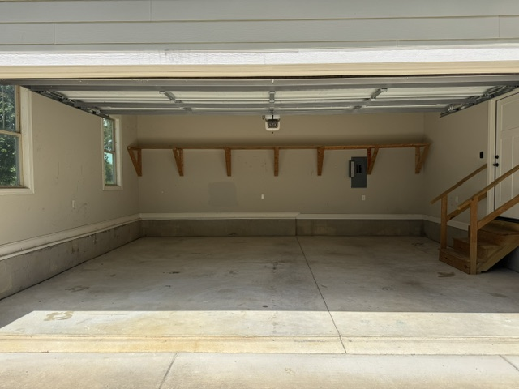

Our Work
Junk Removal Jobs Near Pinehurst

Full trailer hauled from Pinehurst home

Estate cleanout — Pinehurst resort area

Garage decluttering near Pinewild
The Sandhills' most trusted junk removal service. We haul estate cleanouts, old hot tubs, furniture, appliances, yard debris, and construction waste from homes throughout Pinehurst — including Pinewild Country Club, Forest Creek Golf Club, CCNC neighborhoods, and along the Midland Road corridor. Free estimates. No surprises.
Pinehurst, NC
Pinehurst is home to world-renowned golf communities, beautiful estates, and a large concentration of retirement and second homes — making it one of the highest-demand areas in Moore County for professional junk removal, estate cleanouts, and specialty item hauling.
We regularly serve residents throughout the Village of Pinehurst historic district, the Pinewild Country Club community off Linden Road, Forest Creek Golf Club neighborhood homes, and properties in and around the Country Club of North Carolina (CCNC) along Morganton Road. We're also frequently called to homes near the Pinehurst Resort and along the Midland Road (Hwy 2) corridor.
Estate cleanouts are particularly common in Pinehurst due to the concentration of senior residents and retirement properties. We work directly with Moore County probate executors, Pinehurst realtors, and estate attorneys to clear properties on tight real estate timelines.
Nearby: Southern Pines · Aberdeen · Whispering Pines
Pinehurst Hauling Services
Full-home estate cleanouts throughout Pinehurst's golf communities and historic Village neighborhoods. We coordinate with probate executors, realtors, and estate attorneys — including remote management for out-of-town families.
Estate Cleanout Details →Old hot tubs and spas on Pinehurst decks and patios — including those at Pinewild and Forest Creek homes — dismantled, cut up, and fully hauled away. One of our most common specialty jobs.
Hot Tub Removal Details →Sofas, sectionals, mattresses, dressers, armoires, dining sets — removed from any room. Perfect for downsizing Pinehurst homeowners or estate turnover situations.
Furniture Removal Details →Refrigerators, washers, dryers, dishwashers, water heaters — we disconnect, carry, load, and properly recycle old appliances from Pinehurst homes and rental properties.
Appliance Disposal Details →Make room for the golf cart. Years of accumulated boxes, tools, old sports gear, and forgotten furniture cleared in one visit. Pinehurst garages cleaned top to bottom.
Garage Cleanout Details →Branches, storm debris, brush piles, and old fencing from Pinehurst yards. We handle what the county won't — including the pine needle and longleaf pine debris common in Sandhills landscaping.
Yard Waste Removal Details →Judgment-free, compassionate hoarder cleanouts for Pinehurst families, estate executors, and probate attorneys dealing with extreme accumulation situations.
Hoarder Cleanout Details →Renovating a Pinehurst home? Remodeling a kitchen or bath near the Village? We haul drywall, lumber, tile, carpet, and renovation debris — keeping your job site clean.
Construction Debris Details →Old mattresses, box springs, and bed frames removed from any room in your Pinehurst home. No need to drag it to the curb — we carry it out from upstairs if needed.
Mattress Removal Details →Simple Process
Describe what you need hauled or text photos. We give you an honest upfront price — no waiting for a callback, no mystery quotes.
Same-day availability most days when you call before noon. We work around gated community access hours and HOA rules.
We arrive on time, do all the lifting and loading, leave the area broom-clean, and haul everything to proper disposal — Carthage landfill or local recycling centers.
Our Work

Transparent Pricing
Pricing is based on how much space your items take in our truck. Here are general ranges — call for your exact upfront quote.
One large item — mattress, couch, refrigerator, hot water heater, or similar. Includes carry-out from any room.
Garage cleanout, several furniture pieces, or a room's worth of accumulated items. Most common Pinehurst job.
Full trailer capacity — ideal for estate cleanouts, major decluttering, or construction debris from a full renovation.
Why Pinehurst Chooses Us
Call before noon, we can be there the same afternoon. We understand you want it gone — not scheduled for next week.
The quote we give you is the price you pay. No bait-and-switch once we're at your door. No surprise disposal fees.
From attic to driveway, from upstairs bedroom to curb — you just point at what you want gone. We handle the rest.
We're familiar with HOA access requirements, gated community protocols, and the specific needs of Pinehurst's premier neighborhoods.
We donate usable items to local Moore County charities and take everything else to proper disposal — the Carthage landfill or area recycling centers.
Frequently Asked Questions
In Pinehurst, we provide same-day junk removal, estate cleanouts, hot tub removal and demolition, furniture haul-away, appliance disposal, garage cleanouts, yard waste removal, construction debris hauling, mattress removal, and shed demolition. We serve all Pinehurst neighborhoods including Pinewild Country Club, Forest Creek, CCNC, and the Village of Pinehurst.
Junk removal in Pinehurst costs $75–$150 for a single item, $150–$350 for a partial load, and $350–$600 for a full truckload. Estate cleanouts and hoarder situations are custom-quoted. All pricing is upfront with no hidden fees.
Yes. Hot tub removal is one of our most popular services in Pinehurst golf communities. We dismantle, cut, and haul away old spas from decks and patios — including those in gated communities. We coordinate gate access with community contacts.
Yes. We handle estate cleanouts throughout the Pinehurst resort area, Midland Road corridor, and all Village neighborhoods. We work with probate executors, realtors, and out-of-town family members to clear properties completely and prepare them for sale.
Yes. Same-day junk removal is available in Pinehurst when you call before noon. We operate Monday through Saturday, 7AM to 7PM. Call (910) 420-8159 for immediate scheduling.
Usable furniture and household items are donated to local Moore County charities including the Aberdeen Habitat for Humanity ReStore. Recyclable materials go to area recycling centers. Everything else is properly disposed of at the Moore County Solid Waste facility in Carthage.